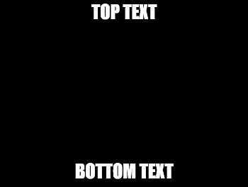
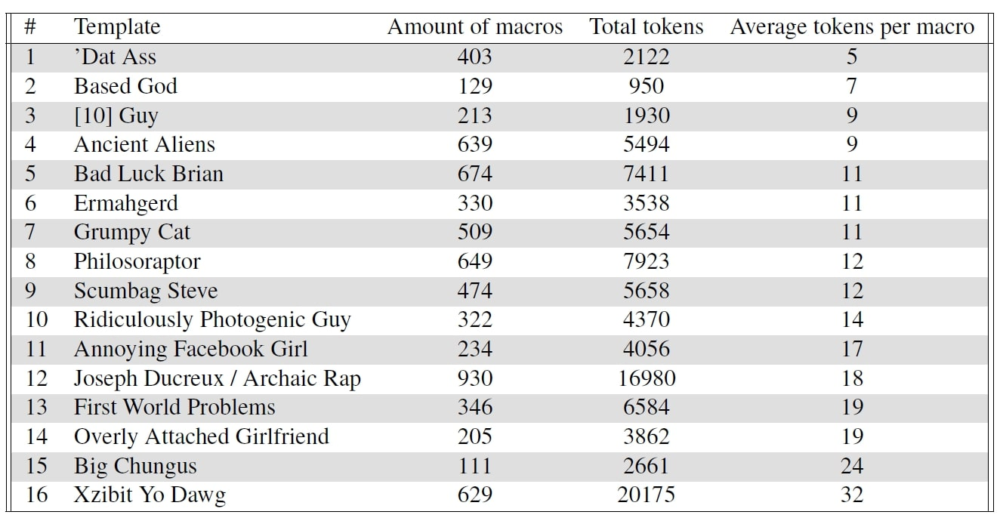
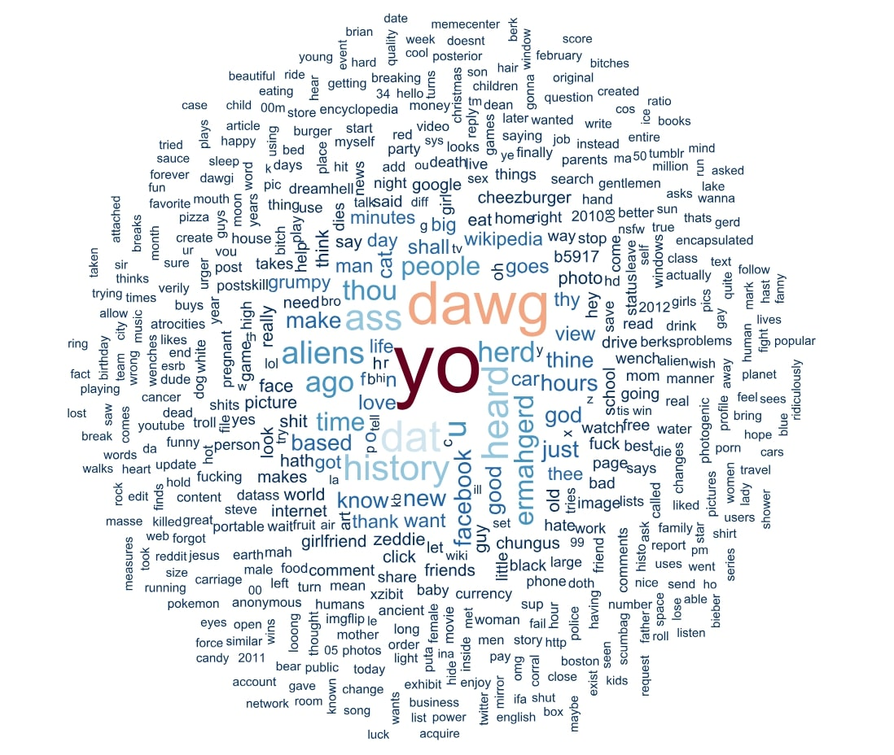
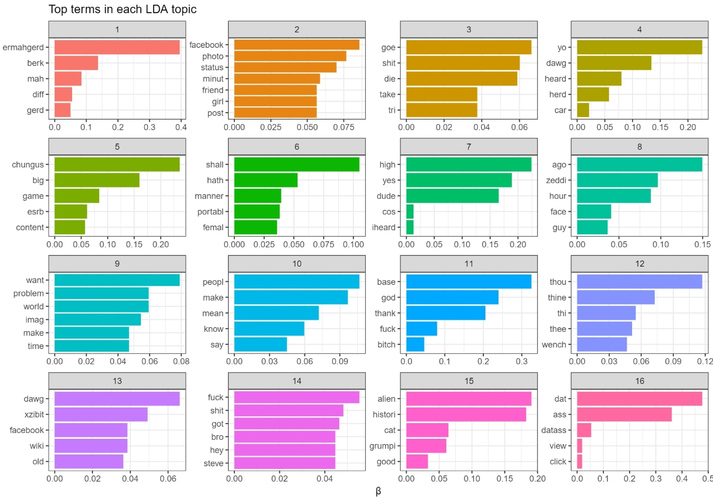

1. Introduction
Memes are a popular part of today’s online culture, reflecting current developments in pop culture, politics or sports. That has led various scholars in the humanities and other research areas to examine the importance and role of memes (Shifman, 2014a; Highfield & Leaver, 2016; McCulloch, 2019). Bauckhage (2011) defines the term Meme as “contents or concepts that spread rapidly among Internet users”. While memes with solely visual content are rising in popularity, one of the most common and historically important meme types is the “image macro” which consists of a reusable image template with a top and/or bottom text (figure 1).
Figure 1: Typical format of an image macro
There are various established image templates (see figure 2 for an example) and with the growth of social media, new ones are constantly emerging. We differentiate between the meme template, which is basically just the image of a meme and the meme derivatives, which are the multiple manifestations of a meme template differing regarding the text of the meme.
Figure 2: Example of “Scumbag Steve”, a popular image macro meme
Although memes are distributed and shared in large quantities, the majority of current research on memes is qualitative, e.g. analyzing patterns and stylistic rules of a small number of memes (Shifman, 2014b; Osterroth, 2015). Since image macros typically have a textual component, we want to use computational methods of Distant Reading (Moretti, 2013) to analyze memes in a large-scale approach. Our project aims to identify developments of the content and sentiment of memes in a diachronic way but is also based on image templates. In this paper we present first results on the corpus acquisition workflow we have developed as well as the application of general text analysis, topic modeling, and sentiment analysis on the overall corpus.
2. Corpus Creation
To create a corpus for our analysis we use the platform knowyourmeme (https://knowyourmeme.com/). It is one of the most popular platforms for uploading memes and offers the possibility to search for specific meme categories like image macros. Furthermore, the different derivatives of a meme template are collected under a single entry and are enriched with metadata. For our first analysis, we focus on 16 of the historically most popular templates and we have implemented a scraper to access the links to the meme derivatives and metadata. To get the text of the memes we use Google Cloud OCR on the images gathered. Our final dataset consists of 7.840 meme derivatives, metadata and the text (see figure 3). This corpus is publicly available for the research community to download and use: https://docs.google.com/spreadsheets/d/1ESecAyzfWvXTELflbWwZEXWE_tGKq8wmTTpOTSSrDJY/edit?usp=sharing
Please note that we only include memes with English language since this is the language knowyourmeme is focused on.
Figure 3: Corpus description
3. Corpus Analysis
For all approaches, we have implemented various preprocessing steps commonly used in text mining (e.g. lemmatization). Figure 4 shows a word cloud of the most frequent words of the entire corpus:
Figure 4: Word cloud of the most frequent words of the entire corpus
The word cloud illustrates the specifics of meme language like the dominance of slang. One can also identify some word patterns that are consistently used on some memes like e.g. “yo” and “dawg” being common words for the “Xzibit Yo Dawg”-meme template.
For topic modeling, we use Latent Dirichlet Allocation (LDA, Blei et al., 2003) to calculate 16 LDA topics. LDA topics are described by typical word clusters within documents (here: meme derivatives), thus topic modeling produces lists of words that appear frequently together in documents. Our assumption is that every meme template is equivalent to a topic, thus we chose the number of our image macros as topic number (16).
Figure 5 illustrates our results for the topic modeling analysis:
Figure 5: 16 LDA topics of the corpus; with the five most contributing tokens per topic
As expected, most of the topics are expressions of a single meme template (e.g. topic 1 for the “Ermahgered” or topic 3 for the “XZibit Yo Dawg” meme template) which shows that some memes consist of homogenous and reoccurring word patterns. However, there are some overlaps like topic 15, expressing words common in the “Ancient Alien” and “Grumpy Cat” meme. We plan to investigate these memes in future work in more detail to examine the similarities they have in more detail.
For the sentiment analysis, we use the sentiment lexicon “Bing” (Liu, 2012; Liu & Zhang, 2012) for polarity (positive, negative) and the NRC Word-Emotion Association Lexicon (Mohammad & Turney, 2013) for emotions. Figure 6 shows which words contribute the most to a specific overall sentiment:
Figure 6: Most important tokens contributing to the overall sentiment in the corpus
Though we cannot report the results of the sentiment and emotion comparisons among the memes in detail, one outlier meme we want to highlight is the “Ancient Alien” meme. The “Ancient Alien” meme has the highest values for disgust and fear, which is a fitting result since those memes are often used in the context of conspiracy theories.
Currently, our research is at an early stage and exploratory. In future work, we want to continue our analysis by increasing our corpus, filtering out noise during the acquisition and gather more metadata to perform diachronic and meme based analysis and comparisons considering sentiments and topics.
References
Bauckhage, C. (2011, July). Insights into internet memes. In Fifth International AAAI Conference on Weblogs and Social Media.
Bauckhage, C., Kersting, K., & Hadiji, F. (2013, June). Mathematical models of fads explain the temporal dynamics of internet memes. In Seventh International AAAI Conference on Weblogs and Social Media.
Blei, D. M., Ng, A. Y., & Jordan, M. I. (2003). Latent dirichlet allocation. Journal of machine Learning research, 3(Jan), 993-1022.
Davison, P. (2012). The language of internet memes. The social media reader, 120-134.
Highfield, T., & Leaver, T. (2016). Instagrammatics and digital methods: Studying visual social media, from selfies and GIFs to memes and emoji. Communication Research and Practice, 2(1), 47-62.
Liu, B. (2012). Sentiment analysis and opinion mining. Synthesis lectures on human language technologies, 5(1), 1-167.
Liu, B., & Zhang, L. (2012). A survey of opinion mining and sentiment analysis. In Mining text data (pp. 415-463). Springer, Boston, MA.
McCulloch, G. (2019). Because Internet: Understanding the new rules of language. Riverhead Books.
Mohammad, S. M., & Turney, P. D. (2013). Crowdsourcing a word–emotion association lexicon. Computational Intelligence, 29(3), 436-465.
Moretti, F. (2013). Distant reading. Verso Books.
Osterroth, A. (2015). Das Internet-Meme als Sprache-Bild-Text. Image, 22, 26-46.
Shifman, L. (2014a). Memes in digital culture. MIT press.
Shifman, L. (2014b). The cultural logic of photo-based meme genres. Journal of Visual Culture, 13(3), 340-358.